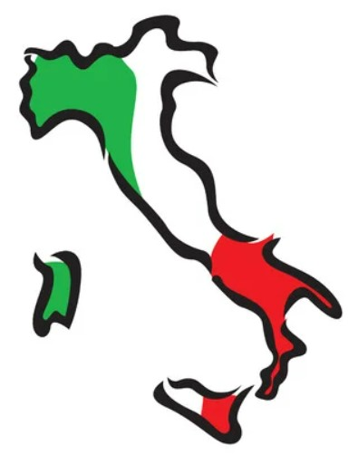

ITALIA: pasado, presente y futuro
Este es un proyecto familiar para poder compartir toda clase de Información sobre ITALIA, de nuestros antepasados, recetas y que esta comunidad sea creciendo dia tras dia.
Para comenzar diremos que esta página esta hecha con mucha pasión, y representa nuestra historia. Aquella que nos lleva muchos años hacia atras, o quizas no tantos. Pero que nos une la pasión por ese bello pais que es ITALIA.
Este es un proyecto que nace con la intensión de poner a disposición de todo el mundo, información del pasado y actualidad. La idea de este proyecto es poder intercambiar experiencias, vivencias, etc.

11/07/2022 - Una ciudad turística italiana impone multas por llevar el torso al desnudo. El alcalde de Sorrento, una ciudad turística italiana, está tomando medidas para imponer multas a las personas con vestimenta inapropiada alegando una preocupación por la "calidad de vida" de sus ciudadanos. Massimo Coppola, alcalde de Sorrento, anunció multas de entre 25 y 500 euros en una publicación de Facebook del 6 de julio.(CNN)
20/07/2022 - Se enfría la pista Skriniar: Según L’Équipe, los parisinos no suben de 50 millones de € mientras que el Inter, que no ha podido fichar a Bremer, no baja de los 60-70 millones por el central. Lo que parecía un fichaje inminente se está complicando de sobremanera para el PSG. Milan Skriniar, central de 27 años del Inter de Milan, sigue muy lejos de convertirse en nuevo jugador de los parisinos. De acuerdo con la información de L’Équipe, las discrepancias de dinero entre ambos clubes son considerables y las negociaciones no han avanzado en los últimos días. Respecto a Skriniar, el dossier es complicado por una cuestión de dinero. El Inter de Milan pide entre 60 y 70 millones de euros por el esloveno y Luis Campos, consciente de que ese precio le puede poner en dificultades en el Fair-Play Financiero, no sube de 50. Si finalmente los Nerazzurri continúan inflexibles en las negociaciones, el PSG estudiará otras pistas en defensa durante las próximas semanas.(AS)
21/07/2022 - El presidente de Italia, Sergio Mattarella, disuelve el Parlamento y convoca a elecciones anticipadas: Mattarella añadió que se convocarán elecciones "en el plazo indicado por la Constitución". La decisión se produce después de la dimisión del primer ministro Mario Draghi este mismo jueves. El presidente pidió Draghi que permanezca en el gobierno como interino hasta que se elija a su sucesor.(CNN)
06/07/2022 - Extraditan desde Brasil a Rocco Morabito, uno de los mafiosos más buscados de Italia. Rocco Morabito, uno de los fugitivos más buscados de Italia y capo de la droga condenado de la mafia italiana, llegó a Roma el miércoles por la mañana después de ser extraditado de Brasil, dijo la policía italiana. Morabito, de 56 años, fue arrestado por la policía brasileña el 25 de mayo de este año durante una operación conjunta de la policía italiana, Interpol y las agencias estadounidenses DEA y FBI, dijo la policía de Roma en un comunicado. El comunicado dice que Morabito es "uno de los principales intermediarios del mercado internacional de drogas". Fue condenado por delitos relacionados con las drogas por un tribunal italiano hace dos décadas en ausencia y cumplirá 30 años de prisión. Morabito también fue incluido en la lista de fugitivos de “máximo peligro” del Ministerio del Interior italiano. Después de estar prófugo durante 23 años, fue detenido en Uruguay en septiembre de 2017 por carabineros. El 24 de junio de 2019, mientras esperaba ser extraditado a Italia, logró fugarse de una prisión en la capital uruguaya de Montevideo. Permaneció escondido hasta mayo de 2021 cuando la policía, a través de “complejas investigaciones internacionales, que también involucraron seguimiento de pistas telemáticas”, lo encontró en la ciudad brasileña de Joao Pessoa, agregó el comunicado.(CNN)